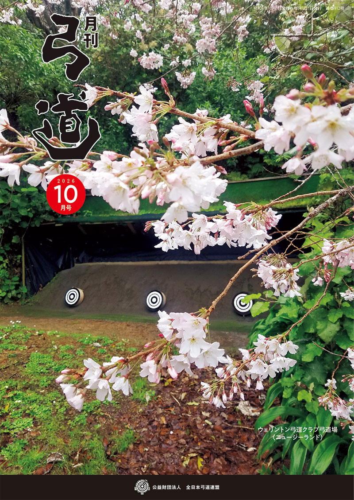

全日本弓道連盟について
月刊「弓道」 最新号

2026年10月号 第912号
全日本弓道連盟の機関誌。弓界の最新ニュース、大会・審査の要項や結果、弓道理論などを毎月お届けしています。
（10月9日発送予定）目次・掲載内容
【口絵】
第23回全国中学生弓道大会
第57回全日本教職員弓道選手権大会
【大会レポート】
第23回全国中学生弓道大会
・男子団体・個人入賞コメント
・女子団体・個人入賞コメント
・近藤 京子 全弓連理事・医科学委員会委員長インタビュー
・小嶋 陽介 宇都宮市立鬼怒中学校教諭インタビュー
・大会成績
第57回全日本教職員弓道選手権大会
【講習会レポート】
2026年【招聘事業】ブラジル弓道セミナー・審査会（サンパウロ）報告
【投稿】
第22回西日本コメディカル学生弓道大会
第67回関東弓道日光大会
「令和８年熊本地震」義援募金のお願い
【報告】
第５回世界弓道大会〔東京2028〕および日本代表選手選考について
第５回世界弓道大会ロゴマーク募集
連合会発インフォメーション
【告知板】
・中央審査会 結果発表
・中央審査会 日程・要項
・大会 日程・要項
・他団体主催行事
・世界の射場から
・11月の主な行事
【その他】
地方審査会合格者発表
都道府県弓道連盟 連絡先
編集後記
ご注文についてのご案内
全弓連の機関誌のお求めは、オンラインショップ・お電話・FAX・E-mailでもご購入いただけます。
| バックナンバーのご注文 | 月刊『弓道』のバックナンバーはオンラインショップからご購入いただけます。 オンラインショップはこちらから |
|---|---|
| 新規定期ご購読お申込み／ ご購読状況確認 | 月刊『弓道』購読者管理システムサポート TEL: 03-3259-6269 （月～金 10:00～17:30 ※12:00～13:00除く）メールでのお問い合わせはこちら（kikanshi-support@kyudo.jp） |
| お問い合わせ先 | 公益財団法人全日本弓道連盟 メールでのお問い合わせはこちら |
全日本弓道連盟について コンテンツ